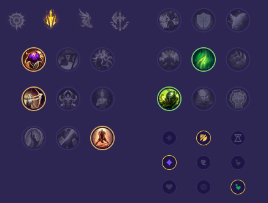

Starter: Tarcza Dorana Mikstura Zdrowia Core Bulid: Ostrze Zniszczonego Króla Nagolenniki Berserkera Nieśmiertelny Łuklerz Full Bulid: Ostrze Nieskończoności Taniec Śmierci Anioł Stróż / Jak'Sho Zmienny

Słaby przeciwko: Mid: - Vladimir - Akali - Akshan - Vex - Pantheon - Zoe Top: - Pantheon - Urgot - Riven - Irelia - Jax - Varus Dobry przeciwko: Mid: - Sylas - Orianna - Ryze - Xerath - Aurelion Sol - Kassadin Top: - Yorick - Gwen - Sion - Teemo - Nasus - Camille